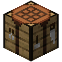
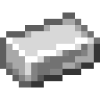
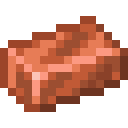
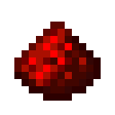
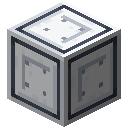
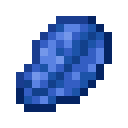
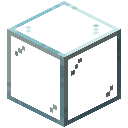
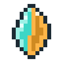
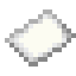
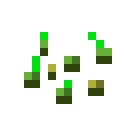

Getting Started
A first model fits in a few blocks: a Model Core, an Embedding Table and some Signal Cable. It will learn to farm. Then you give it a body.
Materials
Tensor Casing is the shell of every machine; Weight Crystal holds learned numbers, so machines with weights need them.

Crafting






Then craft the Model Core, a stack of cables and a Field Dataset: endless practice at farming.


Machines are made in a Fabricator. With no photomask in it, it makes the Embedding Table from a casing, a Wafer and a weight crystal.
Build it
- Place the Model Core. Its front turns toward you: tokens come out of it.
- Lay a cable from the Core's front to a free spot a few blocks away.
- Place the Embedding Table against the end of that cable. It snaps into the flow: its back reads the cable and its front points away.
- Lay a cable from the table's front back to any other face of the Core: its sides, its top or its back. That is where the model's scores go in.
- Open the table and set Width to V (vocab).

The two cables never touch, so they form two separate networks: one carries tokens to the table, the other carries the table's scores back.
Train it
Open the Core and put the Field Dataset in one of its Data slots. Switch to Train and press Train. Two curves fall: the loss on practice, and the loss on the test, which only uses plots the model never practised on.
Farming takes little thought: harvest a ripe plot, plant a bare one, leave anything else to grow. An Embedding Table set to V scores the next character from the one before it, and the character before each decision is the plot, so this one table can learn all of farming. When Reacting on the Tests tab passes 98%, the model is ready.
Save it
Craft a Checkpoint, put it in the Core's checkpoint slot and press Save to checkpoint. The Core tests the model on every benchmark and keeps it, scores and all, in the crystal. The machines can go on training; the checkpoint keeps this moment.
Give it a body
Craft an Agent and place it beside some farmland with a chest nearby: where it stands becomes its home. Open it, put the checkpoint in its Model slot, hand it a few seeds and choose Farm.
It walks the farmland around home. At every plot it asks its model what to do, in exactly the format of the test, and does what the model answers. Its screen shows what it asked and what came back. Walking, reaping and carrying are the body's work; every decision is your model's.
Further
Other datasets teach other jobs, and better models need machines built from designs: wire them yourself on a Bench, or go looking for the old ones in the ruins.
- Look at any machine to see its name, its output shape (or what is wrong with it) and what the face you are looking at does.
- Sneak-use a machine's face to point its output there.
- Training runs on its own threads. Place Training Accelerator blocks against the Core to give it more, and keep them cool.
The Model Core. Tokens leave through its front; scores come back through its top.
The Embedding Table, Width set to V.
Amethyst ShardCheckpointAgent